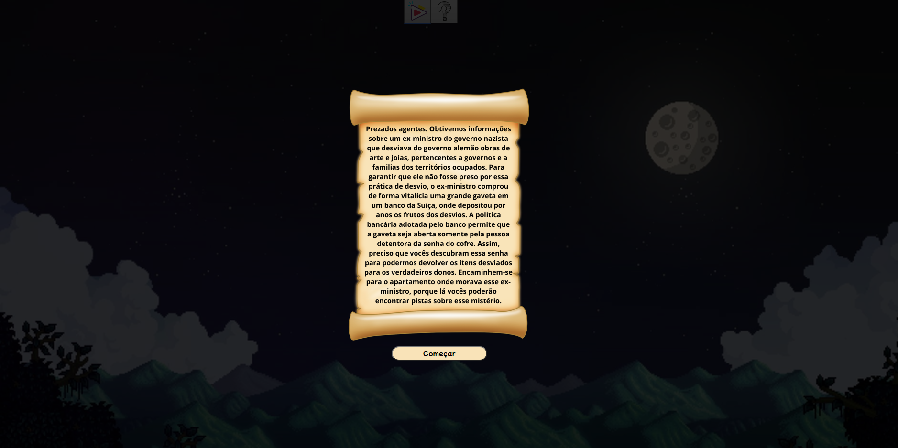
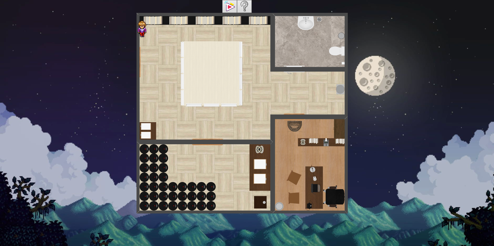
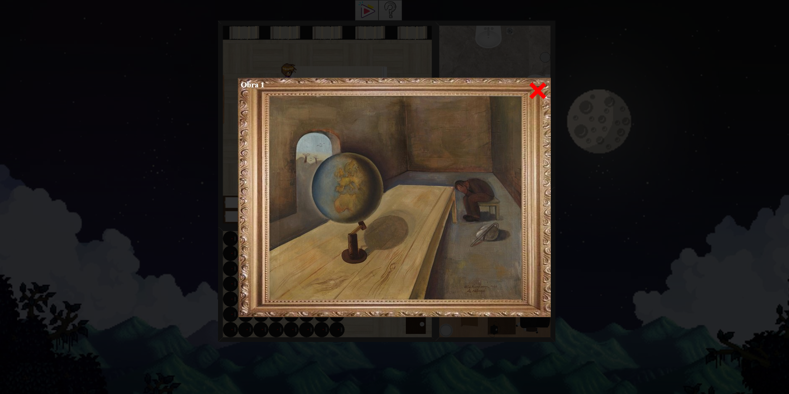
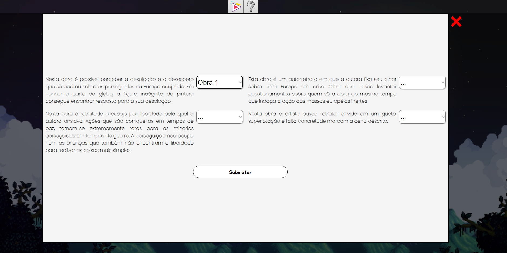

Após apertar o botão "Play", o Escape Room inicia-se com a carta de instruções para o agente e, em seguida, serão apresentadas as missões do jogo para o personagem que irá decifrar as missões da sala. Por fim, com todas as informações que serão recolhidas pelo agente, ele irá repassar tudo o que descobriu para os seus superiores que lhe enviaram a carta.
1. Tela Começo/Carta
2. Tela do Jogo
3. Obra Missão 1
Exemplo de uma das missões que o agente irá realizar.
4. Formulário Missão 1
Missão 1: Relacionar as descrições no formulário abaixo com as obras (imagem 3)
Professora EBTT do IFMG. Bolsista de pesquisa em projeto sobre Inteligência Artificial aplicada em Big Data do Ministério Público de Minas Gerais (MPMG)/Universidade Federal de Minas Gerais (UFMG). Doutora e Mestre em Ciência da Computação pela UFMG. Bacharel em Ciência da Computação pela Universidade Estadual de Santa Cruz. Seus principais interesses de pesquisa estão na área de mineração de dados, análise e gerenciamento de dados, sistemas de recomendação, predição de links e redes sociais. Além disso, tem interesse em aplicar todo conhecimento para auxiliar no avanço da forense digital.
Possui graduação (2011) em engenharia elétrica pelo Centro Federal de Educação Tecnológica de Minas Gerais (CEFET-MG), mestrado (2015) e doutorado (2020) em engenharia elétrica pela Universidade Federal de Minas Gerais (UFMG).Desde 2016 é professor da área de eletroeletrônica no Instituto Federal de Minas Gerais (IFMG).
Professora do Ensino Básico, Técnico e Tecnológico e Coordenadora do Núcleo de Estudos Afro-Brasileiros e Indígenas (NEABI) do Instituto Federal de Minas Gerais - campus de Ribeirão das Neves. Pertencente à Associação Brasileira de Pesquisadores Negros (ABPN) e ao coletivo IFMG Negro. Prêmio CAPES de Teses - edição 2021 na área de História. Doutora (2020) e Mestra (2013) em História (Linha História e Culturas Políticas) pela Universidade Federal de Minas Gerais. Graduada em História pela Universidade Federal de Ouro Preto (2012).
Possui graduação em Ciências Contábeis pela PUC/MG, Especialização em Docência IFMG; Especialização em Contabilidade PUC/MG e Mestrado em Ciências Contábeis pela Fundação Visconde de Cairu Salvador/BA. Ex- Controller da FADECIT ( Fundação de Apoio e Desenvolvimento da Educação, Ciência e Tecnologia de Minas Gerais), Ex- Coordenador financeiro geral e franquia dos correios de Minas Gerais.
Voluntário no projeto Escape Room, Aluno no terceiro ano do IFMG Campus Ribeirão das Neves no curso técnico em informática. Sou aspirante no desenvolvimento web e tenho interesse pela área de desenvolvimento de jogos. Em meu tempo livre gosto de jogar, praticar esportes e estudar sobre programação.
Bolsista no projeto Escape Room, Aluna no terceiro ano do IFMG Campus Ribeirão das Neves no curso técnico de Informática. Sempre tive vontade de aprofundar meus conhecimentos sobre desenvolvimento de jogos. Além de ter um grande interesse na área da informática, como programação web, aplicações móveis, gosto muito de praticar esportes como vôlei e futebol.
Bolsista no Projeto Escape Room, Aluno no terceiro ano do IFMG Campus Ribeirão das Neves no curso técnico em informática. Amo desenvolvimento web e sempre tive muito interesse no desenvolvimento de jogos, em meu tempo livre gosto de jogar jogos eletrônicos, ler livros e assistir séries e filmes.